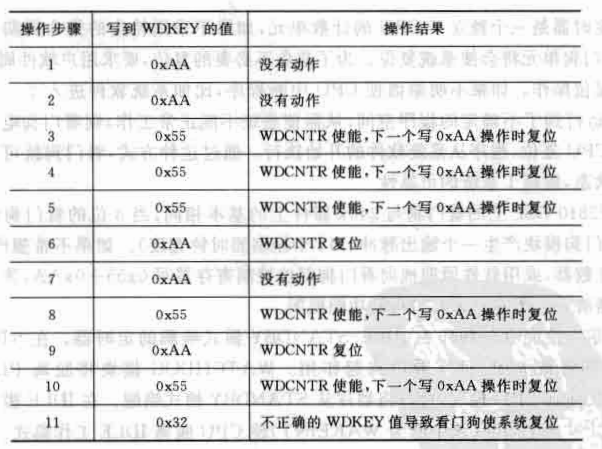

TI_DSP_TMS320F2812的看门狗
看门狗
F2812/F2810 DSP上的看门狗与240x的基本相同。
正常运行时，
8位的看门狗计数器(WDCNTR)被激活后开始计数，
当数到最大值时，
看门狗模块产生一个输出脉冲(512个振荡器时钟宽度) ，使DSP复位。
通过对看门狗复位寄存器(WDKEY)写0x55+0xAA，可以使看门狗计数器清零。

-
通过设定预定标器改变看门狗的时钟频率，进而调节看门狗计数器的溢出时间；
-
逻辑校验位(WDCHK)是对写入WDKEY的值的检验要求：
如果写入WDKEY的值校验位不是101，
则WDKEY将拒绝访问并立即触发复位。
看门狗具体工作过程
在看门狗计数器(WDCNTR)溢出之前，
只有向WDKEY写入正确的值就可以使计数器复位。更具体的：

内核低功耗模式的唤醒
除了正常运行模式，TI DSP的低功耗模式有三种：
空闲(IDLE)、待机(STANDBY)、暂停(HALT)：

当处于STANDBY模式时，所有外设都被关闭，只有看门狗在内部RC时钟信号下运行。
信号反馈到LPM模块后，
能够将DSP从STANDBY模式唤醒。类似的，在IDLE模式下，信号能够向内核产生WAKEINT中断，将内核唤醒。
但是在HALT模式下，看门狗也被关闭，内核将无法自动醒过来。
看门狗相关寄存器
看门狗控制寄存器 WDCR

系统控制与状态寄存器SCSR

看门狗计数寄存器WDCNTR

看门狗复位寄存器WDKEY

看门狗应用例子
看门狗直接连接到PIE模块的WAKEINT中断，
允许将CPU从掉电模式唤醒
1 | interrupt void wakeint_isr(); |
相关函数的定义：
1 | //在官方例程中 |
本博客所有文章除特别声明外，均采用 CC BY-NC-SA 4.0 许可协议。转载请注明来源 YILON！
相关推荐

2023-10-21
TI_DSP_TMS320F2812的时钟
TI_DSP_TMS320F2812的时钟单元 F2810和F2812内部的各种时钟和复位电路结构如下： 系统时钟电路 TMS320F2812的片上晶振和锁相环模块为内核与外设提供时钟信号。 可以通过两种方式为片上晶振提供时钟： 内部振荡器： 在X1/XCLKIN和X2两引脚连接一个30MHz的石英晶体 外部时钟源： 输入的时钟信号直接引到X1/XCLKIN引脚，X2悬空 而DSP引脚XPLLDIS‾\overline{XPLLDIS}XPLLDIS可以控制锁相环： 当为低电平时，PLL被禁止，系统直接采用XCLKIN作为系统时钟； 当为高电平时，XCLKIN经过PLL倍频后作为系统时钟。 通过配置锁相环寄存器（软件方式）即可控制系统时钟的工作频率。 要注意，软件方式改变系统工作频率时，必须等待系统时钟稳定后才可以继续其它操作。 更具体的，锁相环配置模式： 锁相环除了为内核提供时钟， 还通过系统时钟输出提供快速和慢速两种外设时钟： 一般为了降低系统损耗，不使用的外设时钟是禁止的。 系统时钟相关寄存器: 初始化锁相环： 123456789101...

2023-10-22
TI_DSP_TMS320F2812_GPIO
概述 TMS320F2812有56个GPIO， 绝大部分是功能复用引脚。 GPIO功能寄存器 TMS320F2812将数字量IO分组为A、B、D、E、F、G: 通过GPxMux寄存器可配置GPIO的复用模式， 当引脚对应控制位=0时，作为通用数字量IO； 当引脚对应控制位=1时，作为对应功能引脚。 要注意，由于引脚的输出缓冲直接连到输入缓冲， 即当前GPIO引脚上任何信号都会同时传送到对应复用功能的外设上。 因此配置引脚为通用GPIO时，一定要将复用寄存器的对应位置零。 当设置为通用数字量IO时， 通过方向控制寄存器GPxDIR可以设置IO的方向： 为0表示数字量输入， 为1表示数字量输出。 通过量化输入寄存器GPxQUAL可配置A、B、D、E端口的引脚的量化功能。 更一般地，TMS320F2812的外设寄存器可分为外设帧PF0、PF1、PF2。 这些帧映射到处理器的数据地址空间中: 其中， PF0包括控制访问内部Flash和SARAM速度的控制寄存器； PF1包括绝大部分外设控制寄存器； PF2主要用于CAN模块的控制寄存器。 在官方例...
2023-11-11
TI_DSP_TMS320F2812_CCS工作流
非源工程下刷入固件 如果没有源工程而只有固件，通过配置.ccxml文件可以实现直接刷入。 打开CCS： 点击上方工具栏view->Target Cofigurations，会跳出对应窗口， 右键点击该窗口的User Defined文件夹，点击New Target Cofigurations, 弹出新建ccxml文件窗口。 命名完成后，弹出配置窗口： 当保存ccxml文件后， 当需要进行烧录时，先将设备通过烧录器连接到电脑上， 在User Defined文件夹找到对应的ccxml文件， 右键，点击"Launch selected Cofiguration"， 即跳出烧录界面： 点击Connect Target进行连接， 然后点击上方工具栏的烧录按钮进行烧录。 烧录完成后，一定要先点击停止按钮断开连接，再拔掉烧录线。 注意烧录器连接设备时，要先断电，连接后（包括连接到电脑）再上电； 断开烧录器时，要先断电，断开烧录器后再上电。 官方例程 下载官方例程sprc097.zip：链接 默认会将文件放在C\tidcs\c28\DSP281x\v120中。 ...
2023-10-28
TI_DSP_TMS320F2812_事件管理器（一）__定时器GP与比较单元
事件管理器概述 每个281x处理器包含EVA、EVB2个事件管理器， 二者功能基本相同，只是模块外部接口和信号有所不同。 每个事件管理器包含： 通用定时器GP 比较器 PWM单元 捕获单元 正交编码脉冲电路QEP 一般应用在PWM控制电机， 或直接用PWM输出作为A/D转换使用。 每个事件管理器都有独属的控制逻辑模块， 能够响应来自PIE的中断请求， 从而实现事件管理器的各种操作模式。 通用定时器 每个事件管理器包含2个通用定时器， EVA使用定时器GP1、2， EVB使用定时器GP3、4. 每个通用定时器都可以独立使用， 也可以多个定时器彼此同步使用。 通用定时器的比较寄存器用作比较功能时可以产生PWM波形。 当定时器工作在增或增减模式时， 有3种连续工作方式， 可使用可编程预定标的内部或外部时钟。 通用定时器还为事件管理器的每个子模块提供基准时钟： GP1为比较器和PWM电路提供， GP2为捕获单元和QEP提供。 通用定时器的周期寄存器和比较寄存器有双缓冲， 允许用户根据需要对定时器周期和PWM占空比进行编程。 全局控制寄存器GPTCONA/B 确定GP实现具体任...
2023-11-04
TI_DSP_TMS320F2812_SPI接口
概述 SPI总线上只能有一个主机(Master)， 其它都是从机(Slave)。 一般地，可有几种工作情况： Master发送数据，Slave发送伪数据； Master发送数据，其中一个Slave发送数据；（全双工） Master发送伪数据，其中一个Slave发送数据。 C28x的SPI模块概述 C28x有以下特点： 4个外部引脚 SPISOMI\rm{SPISOMI}SPISOMI：从输出/主输入引脚 SPISIMO\rm{SPISIMO}SPISIMO：从输入/主输出引脚 SPISTE‾\rm{\overline{SPISTE}}SPISTE：从发送使能引脚 SPICLK\rm{SPICLK}SPICLK：时钟引脚 波特率：125种可编程波特率 数据字长：可编程1~16个数据长度 4种时钟模式（这里说明SPI通讯方式中的另一种解释形式，和上面说的奇\偶数边沿采样本质一样） 无相位延时的下降沿；SPICLK 为高电平有效。在 SPICLK 信号的下降沿发 送数据，在 SPICLK 信号的上升沿接收数据。 有相位延时的下降沿：SPICLK 为高电平有效。在...
2023-10-22
TI_DSP_TMS320F2812_中断系统
概述 C28x DSP内核有16个中断源， 2个不可屏蔽中断：复位中断RS与不可屏蔽中断NMI 14个可屏蔽中断： INTx。 不可屏蔽中断NMI： 外部不可屏蔽中断请求经由专门的CPU针脚NMI，通知CPU发生了灾难性事件，如电源掉电、总线奇偶位出错等。 内部不可屏蔽中断请求由CPU内部自发产生的，如存储器读写出错、溢出中断、除法出错中断等。NMI线上中断请求是不可屏蔽的（即无法禁止的）、而且立即被CPU锁存。因此NMI是边沿触发，不需要电平触发。 NMI的优先级也比INTx高。 这些又可分为外部中断源与内部中断源： 如图： 内部中断源：三个定时器中断以及外设中断，其中Timer 1、 Timer 2直接连接到CPU内核，其余皆由外设中断扩展PIE管理； 外部中断源：外部引脚触发的中断，除了复位中断RS与不可屏蔽中断XNMI，其余皆由外设中断扩展PIE管理。 所有中断线都连接到中断向量表中， 每个中断对应一个32位的中断入口地址。 外设中断扩展PIE PIE基本结构如下： 由此可得12*8共96个中断。 片上外设与部分引脚已经占用了一些中断号： 外设中断层级...